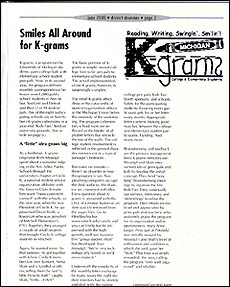
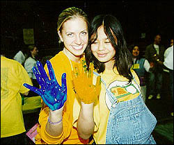
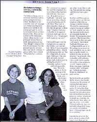
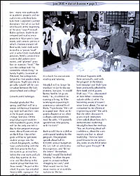
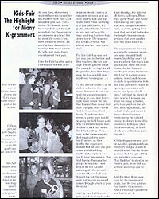

| . |
| Smiles All Around for K-grams |
|
K-grams, a program run by University of Michigan students, pairs college kids with elementary school student pen pals. Now in its second year, the program delivers monthly correspondence between over 1,000 public school students in Ann Arbor, Ypsilanti, and Detroit and their U of M student pals. (Six of the eight participating schools are in Ann Arbor.) K-grams culminates in a year-end "Kids-Fair," held on university grounds. (See article on page 6.) A "little" idea grows big As a freshman, K-grams originator Rishi Moudgil spent about a semester helping in the Ann Arbor public schools through the university's chapter of Circle K, a national student service organization affiliated with the Kiwanis Club. It made him want "more consistent contact" with the schools, so the next year, when he was President of Circle K, he approached David Robb, a Kiwanian who was president of Mitchell Elementary's PTO. Together they arranged a couple of small projects that brought Circle K college students to Mitchell Again, he wanted more. So that summer, he got together with fellow Circle K members Lee Ann Benkert, Neha Shah, and a handful of others, telling them he had "a little thing to start." Laughs Shah, "Little … HAH!" The basic premise of K-grams is simple: recruit college kids to be pen pals to elementary school students. The actual implementation of the K-grams, however, is surprisingly complex. The small K-grams office deep in the catacombs of student organization offices in the Michigan Union belies the enormity of the undertaking. The program's elementary school roots are reflected in the border of alphabet letters that encircle the walls. The college student involvement in reflected in the general disorder reminiscent of a typical teenager's bedroom. But make no mistake - there's no disorder in how this program is run. Two gleaming computers occupy the desk surfaces; the drawers are crammed with files. Every question about K-grams is answered with the click of a mouse button or an item quickly retrieved from the paper files. Go to http://www.umich.edu/~smile and you can't help but be impressed with the high growth, well-run business this "group student effort" has developed. Says Moudgil, "We're very technologically based, or we'd never make it." Underneath the simplicity of the monthly letter exchange lie many issues the eight student directors had to identify and deal with: Recruiting college pen pals, Kids-Fair booth sponsors, and schools. Safety for the participating students. Ensuring that every participant gets his or her letter every month. Appropriate letter content. Making good matches between the college and elementary student participants. Funding. And many more. Brainstorming and feedback are the primary management tools K-grams directors use. Moudgil and Shah interviewed lots of principals and kids to develop the initial concept. They held "very long" brainstorming meetings to organize the first Kids-Fair. They continually use surveys, interviews, and 'debriefings' to refine the program. Their efforts are noticed and appreciated by principals and teachers, who uniformly praise the program for its organization and responsiveness. Mary Anne Jaeger, Principal at Pittsfield, was initially swayed by Moudgil's and Shah's level of enthusiasm and confidence, which she said, gave her "trust." That trust was amply rewarded, she says, calling the program "very well organized" and reliable. The letter exchange: literacy, community, connections The letter exchange pairs a university dormitory with a participating elementary school. Residents are recruited in early fall. Moudgil says it takes less than two weeks to recruit the 1,000 college pen pals he needs. Each student writes an introductory letter; these are forwarded to the elementary school, where teachers and principals review them to make appropriate pairings. Thus, though it surprises the kids, it's no mystery that the pen pals quickly discover they have lots in common. A glance at the chart entitled "What Kids Say" confirms this. The commonalities support the rapid development of a warm relationship that benefits both pals. Says Julie Lutz, 4th-grade teacher at Northside, "[My kids] have lots of ownership - they're assigned someone and it's only them. They have to share a teacher, share parents, but the pen pal is theirs alone." Stephan Gutierrez, co-teacher of an upper-elementary multi-age class at Pittsfield, says, "The pen pals really matter to our kids" One would expect that the younger kids are eager for their letters. Lutz says her kids "REALLY look forward to getting those letters … they're chomping at the bit." But the college kids are just as eager. Shah says, "Our residents are really excited about, really look forward, to getting those letters!" Moudgil explains the impact of K-grams this way. "Before K-grams, at the beginning of the year you got to know your dormmates by asking where they lived last year and what classes they're taking. Now, people are asking, 'and did you have a pen pal?'" Teachers and principals especially appreciate the contribution of the letter exchange to student literacy. All cited the motivational value of having an "authentic" (real) purpose for writing. Says Jeanne Kitzmann, second-grade teacher at Bryant, "It's writing for a real audience. They learned they had to write so their pen pals could read it." Kevin Karr, Northside principal, says, "College students use all of the writing conventions we want our kids to use, so they have a regular model; it's kind of like one-on-one instruction." Sarah Lynch, who co-teachers with Gutierrez, cites a student who usually only writes a few sentences, yet will "eagerly write a dense two-page, highly descriptive letter" to his pen pal, "embodying many things we emphasize" in good writing. But the benefits are not limited to literacy. Says Lynch, "It's amazing the amount of learning that takes place within an activity like K-grams. It's not just writing letters." One common theme sounded by both administrators and teachers was the exposure to college: what kinds of people go, what they do when they're there, what college life is like. Dr. Corbitt, Principal at Bryant, says contact with college kids "eases any anxiety our students have - if their pen pal can do it, so can they." K-grams has grown to the point where residence halls supply more than just letters - many now participate in academic projects and social events with their kids. Kids from Carpenter's partner dormitory "did all of our bulletin boards at the beginning of the year," says Principal Robin Jackson. Students developed and lead science projects in Kitzmann's classroom, and came to parties in which children showed off their work. Lutz's kids were treated to a "potato head" unit in which kids read about potatoes, held a potato trivia contest, did potato crosswords, and "planted" grass hair on a potato "head." She says the college kids "invented the whole thing." In Sandy Knight's classroom at Pittsfield, the college kids helped her first graders study fall leaves. Night says she especially values "all the conversation between the kids about school and college." Growth and Challenges Moudgil graduated this spring, and Shah will be a senior in Chemical Engineering; both will see their roles in the K-grams program change next year. Of the original group of students who founded K-grams, Shah will be the only one left in day-to-day management; she will concentrate on the K-Fair. One of her goals will be to "get more student groups into the schools for projects, so they have a relationship with the little kids prior to the Fair. "We want to go to teachers before the year starts and ask what they want to do this year, and then bring in the student group that matches those needs. As a part of this effort, K-grams has initiated BookMARK, a program that will place college volunteers in schools for one-on-one reading and tutoring. Moudgil will no longer be involved in day-to-day operations, but says, "it would be too hard to let go entirely." So, in addition to earning a living, he'll be working on expanding K-grams on a national level: think, "franchising." He's off to a good start: there are K-grams chapters at six other colleges and universities. And, he adds, "I'll probably spend more time playing with the kids!" Both would like to stabilize and expand funding for the program. The program spends about half its $20,000 annual budget on the fair, half on administrative expenses, and "$0 for the letters" themselves. Moudgil would like to find funding "to allow the program to prosper without struggling for cash," and Shah would love to find more money or in-kind donations for the fair. Whatever happens with them personally, and with the program in the future, both Moudgil and Shah have been profoundly affected by their work with K-grams. Shah says, "I've … discovered an Ann Arbor community outside of the U of M. I'm becoming aware of issues I never knew about. I'm not so consumed by my chemical engineering world." She adds that she often discusses K-grams in job interviews when asked about how she's demonstrated leadership. Moudgil echoes her feelings. "You are learning about self-confidence, about the community you live in, about leadership. There've been good lessons for me personally, some of which I'd rather not have gone through!"
Kids-Fair The highlight for many K-grammers All year long, elementary students have exchanged letters monthly with their U of M student pen pals. (See - Smiles All Around.) Some have met their pen pals through projects in the classroom or social events at school. But for most, the contact has been limited to letters - letters that have fostered relationships that mean a lot to the kids, and make them yearn to meet their pals. Enter the Kids-Fair, the spring culmination of the K-gram program. Amid a festive atmosphere of music and activity booths, kids and pals finally meet. How satisfying is it? Just ask Connie, a 5th grader at Northside. "[Meeting my pen pal] was the most fun thing that ever happened to me. The suspense was UNBELIEVEABLE! And when I saw her I was bursting!" The first Kids-Fair was held last year, and to the kids and their teachers, the fun was large and the glitches small. (For example, no bags for all the goodies. And then there were the live goldfish one booth was handing out…) For the thirty K-grams U of M student volunteer fair organizers, however, it was a behind-the-scenes lesson in thinking on your feet: Forty-eight hours before the fair, they learned thier venue had been changed, from Palmer field to Oosterbaan Field house. To make matters worse, a sports team would be using the field house until only 45 minutes before hundreds of school kids would flood the building. Then, even as the sponsoring student organizations were hastily setting up their booths, the organizers learned that no food was permitted in the building; booths featuring food were hastily relocated outside. The final hurdle: the signal for groups to move to a new area of the fair was the sounding of "The Victors" over the PA, and half-way through the fair, the power went out leaving no sound system through which to give the signal. Lead by their highly energetic, quick-thinking founder, Rishi Moudgil, the kids met all these challenges. Then they spent "hours and hours" interviewing principals, teachers, and transportation officials, students, getting feedback that provided fodder for the lengthy brainstorming sessions that were used to plan this year's Kids-Fair.
A little disappointment can't be avoided, unfortunately as not every pen pal is able to attend the fair. But the fair organizers had thought of that, too, providing volunteer "Fair Buddies" to stand in for missing pals, so no kids was without a college-age-escort. And this time, there were bags for the goodies and crafts. And the live goldfish had quietly disappeared. And a smashingly good time was had by all. |
 The organizational learning was readily apparent to anyone who attended both events. While last year's fair was excellent, this year's was spectacular. Held in Crisler Arena, the fair featured booths and events from over 100 U of M student organizations, from Greek houses to clubs to sports teams. Kids and their pals were treated to opening ceremonies with music and "pen pal talking time," followed by plenty of time in which to roam and share the many activities, which ranged from the athletic (fencing, football, basketball, rugby and more) to the academic (science, medicine) to the cultural (music, traditions from other countries), to the just plain fun (treat-making, all kinds of arts and crafts, face painting, etc.).
The organizational learning was readily apparent to anyone who attended both events. While last year's fair was excellent, this year's was spectacular. Held in Crisler Arena, the fair featured booths and events from over 100 U of M student organizations, from Greek houses to clubs to sports teams. Kids and their pals were treated to opening ceremonies with music and "pen pal talking time," followed by plenty of time in which to roam and share the many activities, which ranged from the athletic (fencing, football, basketball, rugby and more) to the academic (science, medicine) to the cultural (music, traditions from other countries), to the just plain fun (treat-making, all kinds of arts and crafts, face painting, etc.).